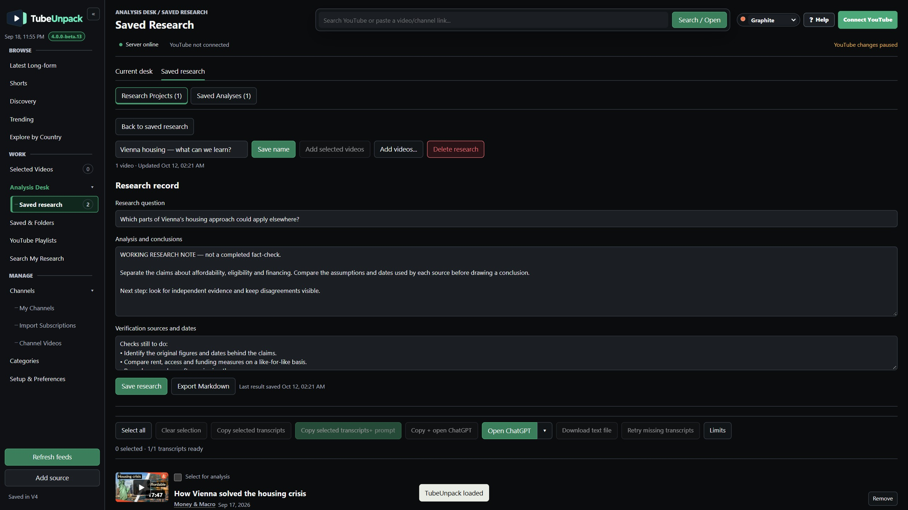

Saved & Folders
Store video references for later. Local folders do not change YouTube playlists.
YOUR SOURCES. YOUR QUESTIONS.
A video starts a question.
Keep more than the link.
Organize your subscriptions, inspect the transcript and prepare material for your preferred AI assistant. Keep the sources and your thinking together.

START WITH SOMETHING YOU WANT TO UNDERSTAND
One video is a starting point.
Not the whole picture.
Start with Money & Macro's housing video. Find the relevant passage, prepare a deeper analysis, and keep the questions you want to pursue.
A demonstration of the workflow, not a claim about which housing policy works. Example creators are not affiliated with TubeUnpack.
01 / THE DESTINATION
A Research Project keeps relevant videos, your question and your working notes together. You can add material as you go and return to the same investigation later.
Uncertainty belongs here too. Keep track of what a source claims, what you think it means, and what still needs independent evidence.

The question stays visible. The original source stays reachable.
02 / BEGIN WITH YOUR CHANNELS
Put related subscriptions into a category such as Finance. Open that topic in Latest Long-form to see those channels' videos together.
Import all your subscriptions or choose individual channels. Give them categories that make sense to you.
See how categories and saved views work →Return to a topic's videos with one category selection.
03 / STAY CLOSE TO THE SOURCE
Watch inside TubeUnpack with the available transcript beside the video. Click a timestamp to return to the passage before you interpret it.
Video, transcript and working context, together. No need to reconstruct which moment you were examining.
Explore the player and transcript →Return to the exact passage, with its surrounding context.
04 / ANALYSIS DESK
TubeUnpack pairs the transcript with a Simple or Deep prompt. Take the material to your preferred AI assistant to examine the argument, supporting evidence and unanswered questions.
The response can help you identify what deserves closer scrutiny. Ask follow-up questions and check important claims against independent evidence.
In beta.13: choose your assistant beside Open assistant, copy Simple or Deep + Transcript, and see when caption preparation or copying is still in progress. Nothing is automatically submitted or retrieved.
Turn the response into better questions and a list of claims to check.
05 / KEEP A RESEARCH TRAIL
Paste a useful response—or write your own analysis—using Save analysis result. Give it a name, then find it in Saved Research → Saved Analyses.
Projects hold the wider investigation. Saved Analyses makes individual responses easy to find again, even after a video leaves the desk or its project is deleted.

Store video references for later. Local folders do not change YouTube playlists.
Bring several videos, a question, conclusions and verification notes together.
Name, search, edit and export the response you manually save for a video.
One editable response is stored per video. Export it before replacing it if you need a separate version. Videos are linked, not downloaded for offline playback.
See exactly what is saved, and where → Watch save, leave and return in beta.13 ↗One starting video, two additional perspectives and a return to the same research. This earlier UI predates beta.13's independent Saved Analyses library.
Reopen the note with its source when you continue the investigation.
WHEN YOUR FEED ISN'T ENOUGH
Search beyond your subscriptions.
Use Wider YouTube to look for another perspective. Explore a country's videos by topic, or browse a channel's indexed history. Add useful material to your project.
Discovery signals help you find material; they are not a measure of truth. Country targeting does not establish where a creator is based.
A guide to finding other perspectives →YOUR QUESTION WILL BE DIFFERENT
Start with the channels you already follow.
Keep what you want to understand.
For invited testers on Windows 10/11, 64-bit. Connect an eligible Google account for YouTube features.
Read the setup guide before installing →Unsigned private candidate. This is a local review, not an unrestricted public release. Verify the source with your inviter; do not disable Windows protections.
TubeUnpack-4.0.0-beta.13-windows-x64-setup.exe
24,134,897 bytes.
SHA-256
0e2e10b85c9bede2f07bfb01cf2a973a3c231d21e3b3cbc927dedea3f64e5c69New clean-Windows installation acceptance, fresh invited-account sign-in and public Google verification remain separate checks.
Download the candidate's tester notesGO DEEPER WHEN IT'S USEFUL
LOCAL-FIRST, EXPLAINED
Your sources, references, cached transcripts and saved work stay in your local workspace by default. There is no TubeUnpack cloud account holding your research.
Google and YouTube provide connected services and playback. What you send to an AI assistant is handled by that provider. Google Drive backup is optional; encrypted backup files do not encrypt the app's working data.
What stays here. What connects elsewhere. →